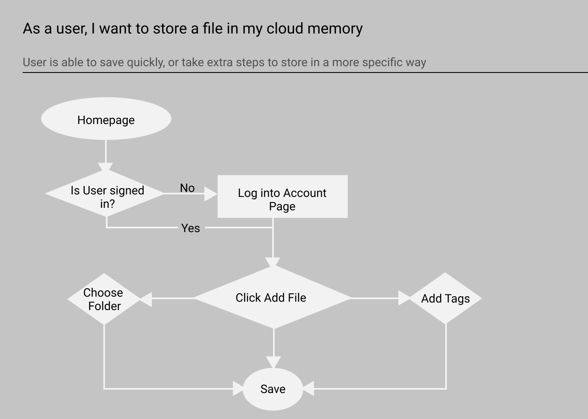
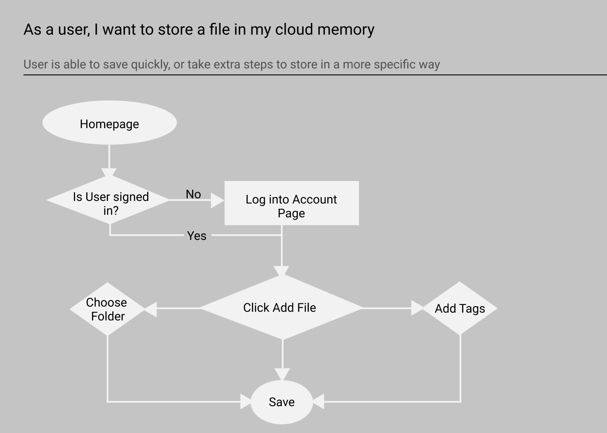

KERNEL
UX RESEARCH • BRANDING & VISUAL DESIGN
Making Cloud Storage fun, fast, and easy - for both casual and professional users.
Our digital info is scattered across messy and disconnected storage systems. As it piles up, our files gets harder to find, and thus harder to share with others. Everyone uses their drives differently so there’s no one-size-fits-all solution.
Kernel lets users store, share, and collaborate on digital files, all in one place. Users’ needs & approaches vary, so Kernel enables them with multiple search-options and flexible views. Easy previewing and auto-sorting saves time and energy so users can focus on their real goal.
Challenged with finding a spot in the already-crowded Cloud Storage market, my work began with researching the competition and habits of those who could benefit from the project.
RESEARCH

COMPETITIVE ANALYSIS
First I studied existing cloud storage systems out there to see where Kernel could fit in:
Google Drive
- Widely Used
- Offers lots of free space
- Connected to Google Suite
- Interface is messy
Dropbox

- Well-known
- Utility is understood
- Dry & Clunky
- Text-heavy
Evernote
- Visually rich
- Distinct branding
- Not well-known
- Bloated with features
The competition is tough with giants like Google and Dropbox, but they are both very focused on text and not so visual. To be successful, a new product would need to be distinct, fun, visual, while keeping it functionality simple and clear. See the full analysis here.
SURVEYS
I employed a short survey to investigate how people currently use Cloud Storage systems and other relevant habits. How do they save important or interesting things they find on the internet? Do they share these files with others, and if so how? What problems do they run into? Are they interested in getting more organized, or having a single storage spot for everything?
My 40 respondents indicated that while they already use a cloud storage system, they are open to new and improved ones. The survey validated the client’s idea and provided insights into how people actually use these products, and what real people are actually looking for.
See the Survey and its Results.
Habits & Struggles
Methods & Desires
USER PERSONAS
Based on the overarching trends of my survey, two distinct personas emerged, each with different needs from a cloud storage system:

Skipper Benneton
CAPTURE & DISCOVER
"I wish my phone would just group the images for me"
GOALS
- Collecting interesting images without worrying about space or if she loses her phone.
- Having images automatically grouped into easily accessible categories.
- To easily display her artwork in a quick, casual way.
FRUSTRATIONS
- Her iCloud always seems to full and pestering her to pay for an upgrade.
- Not being able to find that image she saved a few weeks ago.
- Organizing her files into folders takes time she doesn’t have.

Michael Bell
COLLABORATE & DELIVER
"I need different layouts based on the type of information at hand"
GOALS
- Keeps an eye on team’s progress without disrupting them.
- Wants to see thumbnails of images, and text within text files.
- Not having to worry about client’s technical savviness.
FRUSTRATIONS
- Confusion between team discussion different versions of the same project.
- Important details sometimes hidden based on file type.
- Clients confused about how to receive their product.
Both personas want quick visuals of what the files they need, but their use of folders is where they diverge. Skipper would rather have her files automatically-organized for her, saving time and mental energy. Michael’s company uses a stricter file management protocol and will be setting up his own folders accordingly so that his team is all on the same page.
Equipped with my Cloud Storage market research and fleshed-out User Personas, I started building the features that would make up the app, tailored to real users’ needs.
INFORMATION ARCHITECTURE

USER STORIES
I created a list of User Stories, actions that our users would need to undertake while using the app, and then sorted them by priority. At the very top of these priority lists were account creation, adding files to their storage, and searching these files out. As a revenue generator, it’s imperative users are able to upgrade to a paid-subscription account. See all the user stories here.
"As a new user, I want to upload a file"
"As a returning user, I want to scroll through a list of saved items"
"As a new user, I want to register for an account"
This process prescribed the minimum viable product for Kernel to be successful: a cloud storage app where users can upload and store, view, download, and share files. Users can decide how to specifically sort their files, or let the app take care of it for them.
USER FLOWS & SITE MAP
I diagrammed flows of the most high priority user stories to make sure these tasks could be accomplished quickly and without too many clicks. Additionally, I wanted to include multiple routes to find files, based on a given user’s preferred approach. I built the Sitemap to flesh out all the screens that would require wireframe modeling. Check them out here.
 

WIREFRAMES
I sketched many iterations of Kernel’s dashboard, with the following primary goals:
- Balancing the multiple search features (search bar, list, and folder system)
- A prominent "ADD" button
- An uncluttered space that is relaxing and welcoming to the user’s eye.


I translated my paper sketches into rough digital format using Balsamiq. I then recruited subjects for remote usability testing. This quickly identified some trouble spots:
- Welcome screen didn’t clarify the product’s purpose or function, the users were confused.
- Confusion between the critical “Add Item” button and the lower priority “Add New Folder” button.
I’d have to make the Welcome Page more clear and defined, and invite the users down the page to continue learning. Significant adjustments to the dashboard would have to be made to keep things simple and clear. With this initial feedback on the basic interface, I was ready to craft an identity for the product and bring the project one step closer to fruition.
BRANDING & VISUAL DESIGN

LOGO DESIGN
Kernel needs a modern aesthetic that shows it can compete with its competitors like Google Drive and Dropbox, but infusing it with bold and fun colors so it can stand out, with an illustrative style to maintain a light-hearted sensibility.
I used mind-mapping techniques and sketching to zero in on a the idea of a popcorn bucket - and the metaphor of a kernel as an idea that our users want to store. Rather than going too literal- my logo developed from the idea of the kernel bursting into it’s popped shape, and melding that with the letter K for Kernel. I chose Dosis for the Logotype, button text and technical information, while using Lato for paragraph and conversational text.
See some more in-depth preference tests I ran here.

COLOR SCHEME
PEPPER PURPLE
#1E1651
SRIRACHA RED
#FF3864
GILDKERNEL
##F4C95D
SUNBUTTER
##F1FF7A
SALTMINE
#EFEDCE
ICONS & IMAGERY


TESTING

PROTOTYPE & PREFERENCE TESTING
I took all my branding assets and fit them into my wireframes, to create a Hi-Fidelity prototype using the Invision App, testing both its functionality, and if the visual design was well-received by the users.
The specific User Task tests were successful, however I still sensed an unclear purpose; who this app was for. As much as the bold “GET STARTED” button directed them, they wanted to interact with the top right of the Landing Page in a way that they could not. I also realized that the Home Page rolled out the content too slowly and I was forcing my users to piece together a puzzle, rather than properly introducing them to Kernel. I’d still have to make some changes. See my test notes here.
Personally I felt my dashboard was a little bland, and wanted statistical feedback to justify more color. The results were overwhelmingly in favor of more color - but one “against” comment stood out:
“The White Background gives me the illusion to free space or empty space.. and for cloud storage you want something not cluttered, and you want, well, space.”
I took this conceptual critique and applied it where it was really needed - the landing page. The saturated and bold colors created a heavy weight that wasn’t the right vibe. I decided to give it an overhaul based on what I’d learned.
VERSION 2 ADJUSTMENTS
I pulled out 90% of the background color to let the Landing Page breathe. I realized not every color from my scheme’s arsenal needed to be applied, which simplified everything. I built a Features List which not only spelled out what Kernel is specifically about, but also lead the viewer further down the page. I took a more Responsive Design approach and considered how the static assets would condense as the browser shrinks. Finally I condensed and simplified the vertical real estate at the top of the dash.
VERSION 1

VERSION 2

I fleshed out and expanded the access to the sign up process - further delineating the specific information needed for each plan. As the user signs in for the first time - the empty states guide the user to action.
LANDING PAGE

DASHBOARD SCREENS


Check out the Invision prototype and see how it works!
CONCLUSION
Kernel’s logo, branding concept and visual design created a visually distinct system breathing some whimsy and life into the bland existing market. The UI proved itself to be intuitive and navigable in repeated tests. Its array of features satisfy our client’s MVP and make Kernel a contender in the cloud storage marketplace.
More time spent in the initial research and ideation phase could have yielded a sharper or loftier concept to set itself even further apart from the competition. Specifically, by digging even deeper into existing user habits and trends with extended surveys and follow-up questions; mining more valuable insights from there.
With more time, I would like to carry the illustrations further through the app, and refine them through more iterations. Finally, the most valuable learning came from the feedback of others. Outside points of view revealed the sharpest insights to the problems at hand - those of making a product that works for the user.